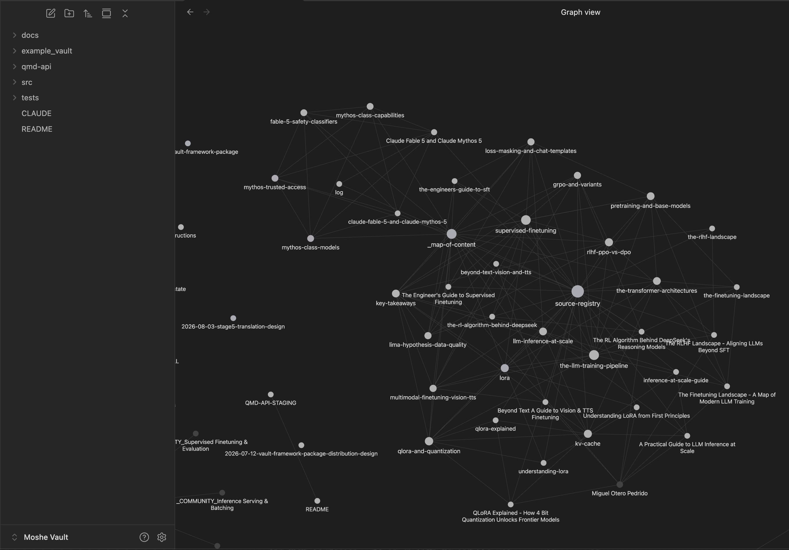
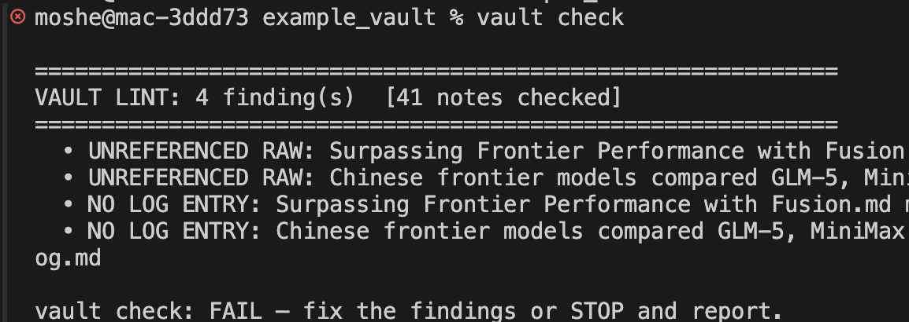
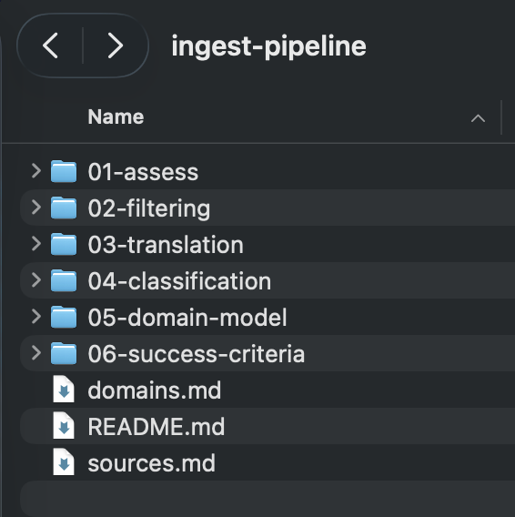

סקירת פרויקט — פיילוט פעיל.
חלק א' — 15 דקות
הבעיה, הפתרונות הקיימים, במה אנו שונים, שלושת היתרונות המובהקים וסטטוס הפיילוט. חלק עצמאי וסגור — אם נעצור כאן, התמונה המלאה הוצגה.
חלק ב' — צלילה טכנית
מחזור חיי ה-vault, תשתיות, מנועי שליפה ומסלול הכניסה ל wiki אצל הלקוח. מיועד לקהל הטכני. ניתן לדלג על כל שקף בנפרד.
שקפי deep-dive מסומנים בפינה הימנית העליונה.
01 הזיה — המודל אינו מכיר את התחומים שלנו. המודל שולט בידע כללי וכמעט אינו מכיר את התחומים הספציפיים שלנו — לכן כששואלים אותו הוא ממציא בביטחון רב.
02 תרגום — הוא אינו דובר את השפה שלנו. גם עם skills וסוכנים, הוא אינו יודע לתרגם את האופן שבו אנו כותבים ומדברים לסקריפטים, שאילתות ופעולות סוכן. הז'רגון, הקיצורים והתהליכים שלנו אינם מתורגמים.
03 הידע קיים — אך מנותק. אלפי עמודים של תיעוד פנימי כבר מכילים את התשובות, שנכתבו לאורך שנים. כיום אין דרך לעגן בהם את המודל.
כל צוות הנתקל בבעיה זו נאלץ לפתח פתרון חלקי באופן עצמאי.
המומחה הוא גם מנוע החיפוש וגם המתרגם — וכמעט אף פעם אינו יודע את התשובה בעל פה. כל שאלה מחייבת אותו לקריאה ידנית בתיעוד, ולאחר מכן לתרגום ידני לסקריפט או לשאילתא המדויקת שהשואל צריך.
60% מיום עמוס — מוקדשים לכך
מענה על שאלות שאנשים היו עונים עליהן בעצמם אילו ה-vault היה מעגן את המודל | לעומת העבודה האנליטית שרק הוא מסוגל לבצע
תשובות רבות שהוא נותן הן תשובות שכבר נתן בעבר — ואף אחת מהן אינה מתועדת.
היום — הזיה: שאלה → המודל מנחש מידע כללי → הזיה.
תרגום: בקשה → נוחתת אצל המומחה (שגם הוא נדרש לעיין בתיעוד ולקרוא ידנית) → הוא קורא ומתרגם ידנית לסקריפט/שאילתא. אדם אחד הוא גם האינדקס וגם המתרגם, ושניהם אינם ניתנים להרחבה.
עם ה-vault: שאלה → ה-vault משיב כשהוא מעוגן בתיעוד שלנו, בצירוף מקורות; השפה כבר ממופה לסקריפטים/שאילתות/skills → רק מה שה-vault אינו יודע מגיע למומחה — ותשובתו הופכת ל-note חדש. האינדקס והמילון נשארים, ומשתפרים באופן רציף.
מקורות — קטעי מקור בלתי ניתנים לשינוי. שכבת הראיות, אינה נערכת. קונפלואנס, תיקיות רשת, מיילים.
וויקי — רעיון אחד לכל note, מקושר בצפיפות, נכתב על ידי המודל.
סכמה — מבנה קבוע שהמודל נדרש לעמוד בו, כדי שה-wiki יישאר מסודר.
רעיון מצוין, והוא נקודת המוצא שלנו.
אלא שהוא תוכנן למחשב נייד מחובר לרשת, עם מודל מתקדם, ולשימוש אישי — היקף מצומצם, מסמכים באנגלית רהוטה, גרסה אחת לכל מסמך ורמת אמינות אחידה.
קיים מודל מתקדם זמין → אצלנו פועל מודל קטן ברשת הסגורה, המוגבל ביכולת שיפוט פתוח.
המחשב מחובר לרשת → אצלנו כל תלות (dependency) נבנית בחוץ ומוכנסת פנימה פעם אחת.
הקורפוס קטן ובאנגלית → אצלנו אלפי עמודים בעברית עם טרמינולוגיה ייעודית שהמודל אינו מכיר — אנו מעגנים אותו באמצעות הזרקת הגדרות GT להקשר.
אדם אחד אחראי → אצלנו מדובר בנכס צוותי — נדרשים תהליכי חפיפה, שדרוג וביקורת.
| LLM-WIKI | SECOND BRAIN OFFLINE | |
|---|---|---|
| סביבה | מחשב נייד מחובר | רשת מנותקת, ללא GPU |
| מודל | המתקדם ביותר, זמין תמיד | מודל קטן ברשת הסגורה, מוגבל ומבוקר |
| שליפה | המודל קורא את ה-wiki | חיפוש היברידי + גרף ידע + Obsidian |
| תהליך | שיקול דעת חופשי של המודל | מחזור חיים מובנה, רובריקות, בדיקות fail-closed |
| היקף | רשימת קריאה אישית | מלוא התיעוד של צוות שלם |
| הפצה | רעיון למימוש עצמי | חבילה מוכנה להתקנה ולשדרוג |
א' — פועל בפועל ברשת הסגורה — כל תלות ארוזה, כל API מותאם, מעבר גבול אחד לכל גרסה.
ב' — שני מנועי שליפה, לא אחד — חיפוש היברידי לאיתור, גרף ידע לניתוח קשרים, ו-Obsidian לעיון אנושי.
ג' — מנגנוני בקרה המאפשרים למודל חלש לספק תוצאות — מחזור חיים מוגדר, סקריפטים דטרמיניסטיים ו-skills המצמצמים את מרחב ההחלטה של המודל.
כלי המניח קיום registry, הורדת מודל או קומפיילר עם גישה לרשת — פשוט אינו פועל ברשת הסגורה.
אפס תלויות — ה-CLI מבוסס על ספריית הסטנדרט בלבד (pure stdlib). אין מה לפתור, אין מה לסנכרן.
מנועים מוכנים מראש — מודולים native מקומפלים מחוץ לרשת מול ה-ABI המדויק של היעד ונכנסים כיחידה אחת.
ללא צורך ב-GPU — החיפוש פועל מול נקודת הקצה (endpoint) הפנימית להסקה, לא מול קבצי מודל מקומיים.
מעבר אחד לכל גרסה — לאחר ההעברה, עדכון ברשת הסגורה הוא התקנה רגילה ברשת הפנימית.
איתור ממוקד — "מצא את ה-note על X" → QMD — חיפוש היברידי, מילות מפתח + וקטורים. ניתוח קשרים — "כיצד X קשור ל-Y?" → GRAPHIFY — גרף ישויות וקשרים. עיון חופשי → OBSIDIAN — דפדוף ועריכה אנושית.
סט קבצים אחד — wiki/ · index/ · raw/ — קבצי Markdown מקושרים על הדיסק. דבר אינו נעול בתוך מסד נתונים שיהיה צורך לחלץ ממנו.
עבודת החשיבה המורכבת מתבצעת מחוץ לרשת הסגורה, עם מודל מתקדם, פעם אחת — ונכנסת פנימה כמבנה מוכן.
LIFECYCLE — שלב מוגדר לכל פעולה, כך שהמודל אינו נדרש להמציא תכנית.
SCRIPTS — הקמת תשתית, רישום, תיעוד ואימות — דטרמיניסטיים. המודל כותב פרוזה בלבד.
SKILLS — ארבעה skills תפעוליים — setup, הכנסה ל-wiki, query, lint — כל אחד עוטף את ה-CLI הנדרש לו.
RUBRICS — החלטות בחירה סגורה מול עוגנים קבועים. לעולם לא שיפוט חופשי ופתוח.
01 סטאפ — הנחת ה-framework, רישום המנועים ואימות שה-bootstrap פועל כנדרש.
02 הכנסה ל-wiki — הפיכת מסמך מקור ל-notes אטומיים, מקושרים ורשומים.
03 שאילתא — מענה על שאלה מתוך ה-vault עם ציטוט ומקור — או ציון מפורש כי אין כיסוי.
השלישי הוא המוצר. השניים הראשונים קיימים כדי שניתן יהיה לסמוך עליו.
$ pip install --upgrade second-brain-vault-framework $ vault upgrade ./my-vault
התשתית אחראית על הקבצים שלה — skills, סקריפטים ו-schema נמצאים בקבצים בבעלות ה-framework ומוחלפים במלואם בעת שדרוג.
אתם אחראים על התוכן שלכם — מקורות, notes ואינדקסים — שדרוג לעולם אינו נוגע בהם. ללא התנגשויות מיזוג (merge conflicts).
01 כיול — כיול המודל על דוגמאות שתויגו על ידי המומחה
02 פילטור — סינון כפילויות, boilerplate ותוכן שאינו רלוונטי
03 בניית מילון ייעודי — הזרקת הגדרות GT (Ground Truth) ובניית מילון ייעודי לתחום (glossary) למונחים הנפוצים בקורפוס אך נדירים מחוצה לו
04 תרגום המסמכים — תרגום כלל המסמכים מעברית לאנגלית תוך שימוש במילון הייעודי
05 סיווג — סיווג type/trust/level מתוך רשימה סגורה
06 הכנסה ל-wiki — תחילה חומר יסוד, לאחר מכן חומר מתקדם
07 בדיקה — שאלות זהב, בקרות שליליות, lint
SCRIPT מבצע — MODEL — EXPERT מבקר או דוגם
הקורפוס שונה. השאלות — מה לשמור, באיזה סדר, מי שופט — זהות.
פרויקט זה הוא היחיד המוקדש לחקר הנושא במשרה מלאה, במטרה להחזיר תכנית לבניית מסלול הכניסה ל wiki עם שלבים ורובריקות שכל צוות יוכל ליישם.
בנוסף, קיימת חפיפה משמעותית מאוד בידע של הדומיין, ולכן נכון יהיה ליצור wiki פר מערכה במרכז, ועליו כל צוות יוסיף את הידע הספציפי שלו, ואולי גם פר תפקידן.
פעיל ויציב — ה-framework מתקין, מבצע scaffold, הכנסה ל-wiki, query ו-lint — עם vault רפרנס ש-CI מוודא את תקינותו. שני מנועי השליפה פועלים ברשת הסגורה ללא GPU.
בהתקדמות — קורפוס לקוח ראשון: מסלול הכניסה ל wiki מוגדר מקצה לקצה, כיול הושלם, שלב הסינון בעיצומו. השלב הבא: השלמת הסינון, הרצת קמפיין הדומיין הראשון עד לעמידה בקריטריוני איכות.
תהליך החפיפה ל-Genie בעיצומו — חומרים הועברו והועברה סקירה טכנית מעמיקה.
הבקשות:
כיצד ה-vault בנוי, כיצד מעבירים אותו לרשת הסגורה, ומה המנועים מבצעים בפועל.
index/ — מפת תוכן, רישום מקורות, לוג, תובנות — שכבת הניווט
wiki/ — רעיון אחד לכל note, עם frontmatter חובה, מקושר למקורות ב-wikilink
raw/ — ראיות בלתי ניתנות לשינוי. לעולם אינן נערכות, אינן משנות שם ואינן נמחקות. הסינתזה זורמת כלפי מעלה, הציטוטים מצביעים כלפי מטה
tests/ — תשובות זהב, מחוץ ל-stack במכוון ולעולם אינן מאונדקסות — אחרת ה-eval זולג ל-retrieval וכל ציון הופך לבלתי אמין.
$ vault scaffold "MT Knowledge" # הנחת ה-framework $ vault check # חייב להסתיים ב-0 $ qmd doctor # backend תקין
בדיקה מבנית — קישורים תקינים, אין stubs פתוחים, אין drift של ה-framework, אוסף ה-eval אינו רשום.
בדיקה התנהגותית — סוויטת בדיקות קצרה: האם המערכת עונה על מה שהיא יודעת, ומסרבת להשיב על מה שאינה מכסה?
01 חיפוש מקדים — איתור notes קשורים לפני כתיבה — עדכון עדיף על כפילות.
02 יצירת תשתית אוטומטית — תקציר, שורה ב-registry ורשומת לוג נוצרים על ידי סקריפט, לא נכתבים ידנית.
03 מילוי התבנית — המודל כותב את גוף ה-note בלבד, לתוך תבנית קבועה.
04 קישור לניווט — מפת התוכן והתובנות מתעדכנות באופן מובנה (by construction).
05 בדיקה ולאחריה אינדוקס מחדש — אימות חייב לעבור לפני עדכון מנועי החיפוש והגרף.
שליפה ולאחריה טענה — חיפוש לאיתור, גרף ל-multi-hop, שליפת המסמך המלא לפני כל קביעה, ציטוט ה-note או מקורו.
כתיבה חזרה — אם המענה יצר סינתזה חדשה ומהותית בין מקורות, היא הופכת ל-note. ה-vault משתבח עם השימוש.
ה-wiki כתצוגת רשת — notes מקובצים לפי רעיון, לא לפי תיקייה. אימות fail-closed, והממצאים שהוא אינו מאפשר להעביר. תיקייה לכל שלב, עם שאלות מנחות שהמומחה ממלא.



קישורים שבורים · notes יתומים · stubs לא ממולאים · drift של ה-framework
כל אחד מאלה מחזיר exit non-zero. המודל אינו יכול להכריז על סיום עבודה שה-checker דוחה — וזוהי בדיוק רשת הביטחון הנדרשת לפני האצלת עבודה למודל קטן.
ה-FRAMEWORK — חבילה שהארגון מתחזק — סכמה, skills, סקריפטים ותבניות. עם גרסאות, בדיקות, מוחלף במלואו בעת שדרוג.
VAULT — תיקייה בבעלות הצוות — המקורות שלו, ה-notes, האינדקסים — לצד אזור שמור לקונבנציות מקומיות.
כל vault צוותי מקבל את השיפורים ללא צורך במיזוג כלשהו.
מחוץ לרשת — מחובר — קביעת גרסה ותג. בניית wheel. אריזת כל ארטיפקט שטרם נמצא באינדקס הפנימי. קומפילציה של מודולים native מול הפלטפורמה וה-runtime המדויקים של היעד. התקנה טרייה ברשת הסגורה אינה יכולה להצליח ללא זאת — זהו אילוץ מבני, לא בעיית קונפיגורציה.
בתוך הרשת — מנותק — פרסום חד-פעמי לאינדקס הפנימי. מכאן ואילך כל מכונה ברשת הסגורה משודרגת בהתקנה רגילה ברשת הפנימית — ללא העתקת קבצים, ללא היכרות עם פרטי המימוש.
האימות אוטומטי: סקריפט ההתקנה מוודא שהבינארי והמודול ה-native נטענים לפני שמתגלה כשל בשטח.
ללא tarball של מודל — מאות מגה-בייט של weights אינם נדרשים לחצות את הגבול או לשבת על כל מכונה.
ללא צורך ב-GPU — גם embeddings וגם generation מופנים לתשתית שכבר פועלת ברשת הסגורה.
ABI מאומת בהתקנה — סקריפט ההתקנה מוכיח שהמודולים המקומפלים נטענים על מכונה זו, ותופס אי-התאמות באופן מיידי.
הגרף מופץ כ-wheels — מנוע גרף הידע נארז באותו אופן — בנייה חד-פעמית מחוץ לרשת, והכנסת התוצר פנימה.
הפיכת אלפי עמודים של תיעוד קיים ל-vault שניתן לסמוך עליו.
אלפי עמודים — ספייס קונפלואנס מלא + מסמכים מ-file-share, באיכות וגיל בלתי אחידים בעליל.
פער טרמינולוגי — המודל אינו מכיר את המונחים הייעודיים שלנו, לכן אנו מעגנים אותו באמצעות יצירת מילון מונחים מראש — חשיבה מורכבת מתבצעת רק כשהמודל מעוגן.
מודל חלש ברשת הסגורה — יעיל לבחירות סגורות וממוקדות מול רובריקה. לעולם אינו אמון על סינתזה פתוחה.
מומחה אחד מעורב בפרויקט — זמין שעות ביום — לכן תורי הביקורת ישימים, והם רשת הביטחון.
כללים פוסלים — עמודים ריקים, boilerplate, stubs ניווט, כמעט-כפילויות ועותקי גרסאות. דטרמיניסטי, עם reason code.
סימנים מעשירים — אנוטציות המעצבות את ההכרעה ומסייעות ל-reviewer, אך לעולם אינן מכריעות לבדן.
המודל מכריע — בפנים, בחוץ, או לא ניתן להכריע. הכרעות בביטחון גבוה עומדות; היתר מופנה לתור המומחה.
מסמכים שנפסלו שומרים רישום לצמיתות — כל החלטה ניתנת לביקורת ולשחזור.
קמפיין 1 — יסודות — רמת ה-trust הגבוהה ביותר. רץ ראשון וכותב את ה-concept notes.
קמפיינים 2 — תחום A - תלוי ביסודות הבסיסיים בלבד
קמפיין 3 — תחום B - חייב להשתמש בידע היסודי, יכול להשתמש בידע מקמפיין 2
קמפיין 4 — תחום C - - חייב להשתמש בידע היסודי, יכול להשתמש בידע מקמפיינים 2 ו 3
נכנס → hash → עבר gate → כלל → נשפט in-scope → מודל → עוגן (GT) → מודל+מומחה → סווג → מודל → הוכנס → מודל+סקריפט → אומת → מומחה
כתיבה בלבד, ללא עריכה — אירועים לעולם אינם נדרסים. המצב הנוכחי הוא projection של הלוג.
ניתן להרצה מחדש — שלבים לעולם אינם משנים את הקלט שלהם וכתיבות הן אטומיות — שחזור הוא פשוט הרצה חוזרת.
היסטוריה חסכונית — ארטיפקטים כבדים יושבים ב-store לפי תוכן; רק שכבת הטקסט המצומצמת מגורסנת.
תחום אחד מקצה לקצה — מסונן, מעוגן (GT), מסווג, מוכנס וניתן לשאילתא אצל הלקוח, בעוד תחומים נוספים עדיין ממתינים בתור.
תשובות עם מקורות — שאלות זהב עוברות, ובקרות שליליות מקבלות חיווי "אין כיסוי" ולא תשובה מומצאת.
הכל מוסבר — לכל מסמך ה-ledger מציין היכן הוא ומדוע — כולל כל מה שנפסל.
ניתן לשחזור — צוות נוסף יכול לקחת את השאלון והגדרות השלבים ולהתחיל באופן עצמאי.
מסלול הכניסה ל wiki ששאר הארגון יכול לאמץ.
הבקשות: